Systèmes NoSQL: la réplication¶
La réplication (des données) est une caractéristique commune aux systèmes NoSQL. Rappelons que ces systèmes s’exécutent dans un environnement sujet à des pannes fréquentes et répétées. Il est donc indispensable, pour assurer la sécurité des données, de les répliquer autant de fois que nécessaire pour disposer d’une solution de secours en cas de perte d’une machine.
Ce chapitre est entièrement consacré à la réplication, avec illustration pratique basée sur MongoDB, ElasticSearch et Cassandra.
S1: réplication et reprise sur panne¶
Supports complémentaires
La réplication, pourquoi¶
Bien entendu, on pourrait penser à la solution traditionnelle consistant à effectuer des sauvegardes régulières, et on peut considérer la réplication comme une sorte de sauvegarde continue. Les systèmes NoSQL vont nettement plus loin, et utilisent la réplication pour atteindre plusieurs objectifs.
Disponibilité. La réplication permet d’assurer la disponibilité constante du système. En cas de panne d’un serveur, d’un nœud ou d’un disque, la tâche effectuée par le composant défectueux peut être immédiatement prise en charge par un autre composant. Cette technique de reprise sur panne immédiate et automatique (failover) est un atout essentiel pour assurer la stabilité d’un système pouvant comprendre des milliers de nœuds, sans avoir à engloutir un budget monstrueux dans la surveillance et la maintenance.
Scalabilité (lecture). Si une donnée est disponible sur plusieurs machines, il devient possible de distribuer les requêtes (en lecture) sur ces machines. C’est le scénario typique pour la scalabilité des applications Web par exemple (voir le système memCached conçu spécifiquement pour les applications web dynamiques).
Scalabilité (écriture). Enfin, on peut penser à distribuer aussi les requêtes en écriture, mais là on se retrouve face à de délicats problèmes potentiels d’écritures concurrentes et de réconciliation.
Le niveau de réplication dépend notamment du budget qu’on est prêt à allouer à la sécurité des données. On peut considérer que 3 copies constituent un bon niveau de sécurité. Une stratégie possible est par exemple de placer un document sur un serveur dans une baie, une copie dans une autre baie pour qu’elle reste accessible en cas de coupure réseau, et une troisième dans un autre centre de données pour assurer la survie d’au moins une copie en cas d’accident grave (incendie, tremblement de terre). À défaut d’une solution aussi complète, deux copies constituent déjà une bonne protection. Il est bien clair que dès que la perte de l’une des copies est constatée, une nouvelle réplication doit être mise en route.
Note
Un peu de vocabulaire. On va parler
de copie ou de réplica pour désigner la duplication d’un même document;
de version pour désigner les valeurs successives que prend un document au cours du temps.
Voyons maintenant comment s’effectue la réplication. L’application client, C demande au système l’écriture d’un document d. Cela signifie qu’il existe un des nœuds du système, disons \(N_m\), qui constitue l’interlocuteur de C. \(N_m\) est typiquement le Maître dans une architecture Maître-Esclave, mais ce point est revu plus loin.
\(N_m\) va identifier, au sein du système, un nœud responsable du stockage de d, disons \(N_x\). Le processus de réplication fonctionne alors comme suit:
\(N_x\) écrit localement le document d;
\(N_x\) transmet la demande d’écriture à un ou plusieurs autres serveurs, \(N_y\), \(N_z\), qui a leur tour effectuent l’écriture.
\(N_x, N_y, N_z\) renvoient un acquittement à \(N_m\) confirmant l’écriture.
\(N_m\) renvoie un acquittement au client pour lui confirmer que d a bien été enregistré.
Note
Il existe bien sûr des variantes. Par exemple, \(N_m\) peut se charger de distribuer les trois requêtes d’écriture, au lieu de créer une chaîne de réplication. Ca ne change pas fondamentalement la problématique.
Dans un scénario standard (celui d’une base relationnelle par exemple), l’acquittement n’est donné au client que quand la donnée est vraiment enregistrée de manière permanente. Entre la demande d’écriture et la réception de l’acquittement, le client attend.
Rappelons que dans un contexte de persistance des données, une écriture est permanente quand
la donnée est placée sur le disque. C’est ce que fait un SGBD quand on
demande la validation par un commit. Une donnée placée en mémoire RAM sans être sur le disque
n’est pas totalement sûre: en cas de panne elle disparaîtra et l’engagement
de durabilité du commit ne sera pas respecté. Bien entendu, écrire sur le disque
prend beaucoup plus de temps (quelques ms, au pire), ce qui bloque d’autant l’application
client, prix à payer pour la sécurité.
Dans ces conditions, le fait d’effectuer des copies sur d’autres serveurs allonge encore le temps d’attente de l’application. Si on fait n copies, en écrivant à chaque fois sur le disque par sécurité, le temps d’attente du client à chaque écriture va dériver vers le dixième de seconde, ce que ne passe pas à l’échelle de mise à jour intensives.
La réplication, comment¶
Deux techniques sont utilisées pour limiter le temps d’attente, toutes deux affectant (un peu) la sécurité des opérations:
écriture en mémoire RAM, et fichier journal (log);
réplication asynchrone.
La première technique est très classique et utilisée par tous les SGBD du monde. Au lieu d’effectuer des écritures répétées sur le disque sans ordre pré-défini (accès dits « aléatoires ») qui imposent à chaque fois un déplacement de la tête de lecture et donc une latence de quelques millisecondes, on écrit séquentiellement dans un fichier de journalisation (log) et on place également la donnée en mémoire RAM (Fig. 55, A et B).
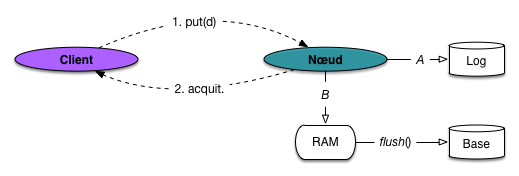
Fig. 55 Ecriture avec journalisation¶
À terme, le contenu de la mémoire RAM, marqué comme contenant des données modifiées, sera écrit sur le disque dans les fichiers de la base de données (opération de flush()). La séquence est illustrée par la Fig. 55.
Cela permet de grouper les opérations d’écritures et donc de revenir à des entrées/sorties séquentielles sur le disque, aussi bien dans le fichier journal que dans la base principale.
Que se passe-t-il en cas de panne avant l’opération de flush()? Dans ce cas les données modifiées n’ont pas été écrites dans la base, mais le journal (log) est, lui, préservé. La reprise sur panne consiste à ré-effectuer les opérations enregistrées dans le log.
Note
Cette description est très brève et laisse de côté beaucoup de détails importants (notez par exemple que le fichier log et la base devraient être sur des disques distincts). Reportez-vous à http://sys.bdpedia.fr pour en savoir plus.
Le scénario d’une réplication synchrone (avec deux copies) est alors illustré par la Fig. 56. Le nœud-coordinateur \(N_m\) distribue l’ensemble des demandes d’écritures à tous les nœuds participants et attend leur acquittement pour acquitter lui-même le client. On se condamne donc à être dépendant du nœud le plus lent à répondre. D’un autre côté le client qui reçoit l’acquittement est certain que les trois copies de d sont effectivement enregistrées de manière durable dans le système.
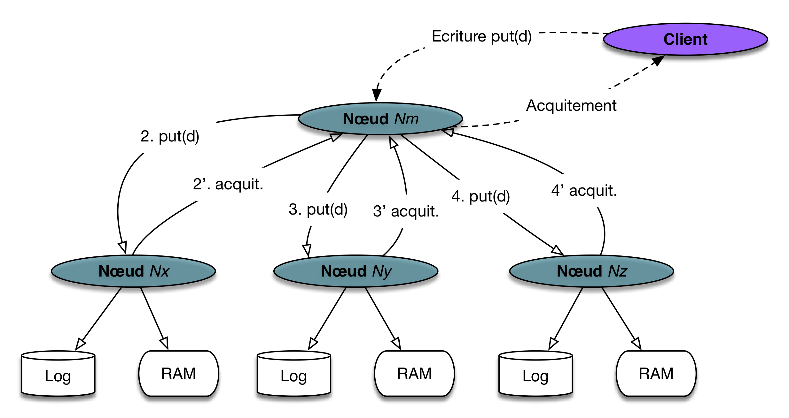
Fig. 56 Réplication (avec écritures synchrones)¶
La seconde technique pour limiter le temps d’écriture est le recours à des écritures asynchrones. Contrairement au scénario de la Fig. 56, le serveur \(N_m\) va acquitter le client dès que l’un des participants a répondu (sur la figure Fig. 57 c’est le nœud \(N_y\)). Le client peut alors poursuivre son exécution.
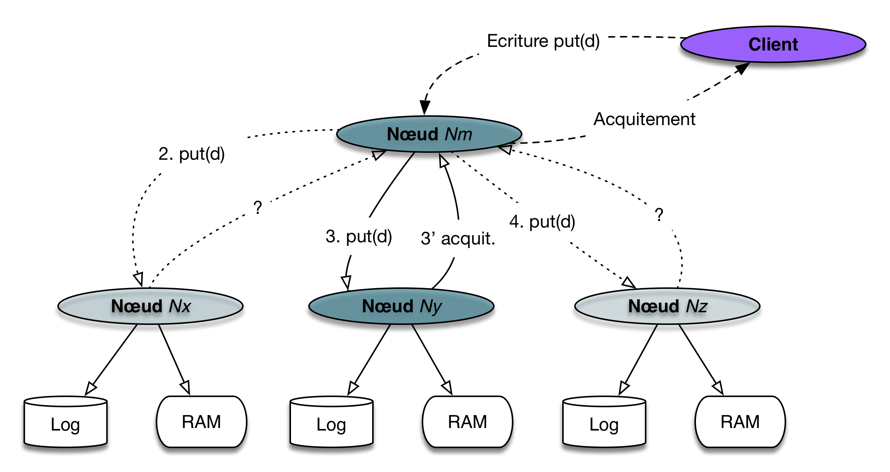
Fig. 57 Réplication avec écritures asynchrones¶
Dans ce scénario, beaucoup plus rapide pour le client, deux phénomènes apparaissent:
le client reçoit un acquittement alors que la réplication n’est pas complète; il n’y a donc pas à ce stade de garantie complète de sécurité;
le client poursuit son exécution alors que toutes les copies de \(d\) ne sont pas encore mises à jour; il se peut alors qu’une lecture renvoie une des versions antérieures de d.
Il y a donc un risque pour la cohérence des données. C’est un problème sérieux, caractéristique des systèmes distribués en général, du NoSQL en particulier.
Entre ces deux extrêmes, un système peut proposer un paramétrage permettant de régler l’équilibre entre sécurité (écritures synchrones) et rapidité (écritures asynchrones). Si on crée trois copies d’un document, on peut par exemple décider qu’un acquittement sera envoyé quand deux copies sont sur disque, pendant que la troisième s’effectue en mode asynchrone.
Cohérence des données¶
La cohérence est la capacité d’un système de gestion de données à refléter fidèlement les opérations d’une application. Un système est cohérent si toute opération (validée) est immédiatement visible et permanente. Si je fais une écriture de d suivie d’une lecture, je dois constater les modifications effectuées; si je refais une lecture un peu plus tard, ces modifications doivent toujours être présentes.
La cohérence dans les systèmes répartis (NoSQL) dépend de deux facteurs: la topologie du système (maître-esclave ou multi-nœuds) et le caractère asynchrone ou non des écritures. Trois combinaisons sont possibles en pratique, illustrées par la Fig. 58.
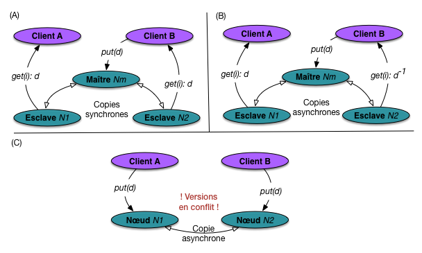
Fig. 58 Réplication et cohérence des données¶
Premier cas (A, en haut à gauche): la topologie est de type maître-esclave, et les écritures synchrones. Toutes les écritures se font par une requête adressée au nœud-maître qui se charge de les distribuer aux nœuds-esclaves. L’acquittement n’est envoyé au client que quand toutes les copies sont en phase.
Ce cas assure la cohérence forte, car toute lecture du document, quel que soit le nœud sur lequel elle est effectuée, renvoie la même version, celle qui vient d’être mise à jour. Cette cohérence se fait au prix de l’attente que la synchronisation soit complète, et ce à chaque écriture.
Dans le second cas (B), la topologie est toujours de type maître-esclave, mais les écritures sont asynchrones. La cohérence n’est plus forte: il est possible d’écrire en s’adressant au nœud-maître, et de lire sur un nœud-esclave. Si la lecture s’effectue avant la synchronisation, il est possible que la version du document retournée soit non pas d mais \(d^{-1}\), celle qui précède la mise à jour.
L’application client est alors confrontée à la situation, rare mais pertubante, d’une écriture sans effet apparent, au moins immédiat. C’est le mode d’opération le plus courant des systèmes NoSQL, qui autorisent donc un décalage potentiel entre l’écriture et la lecture. La garantie est cependant apportée que ce décalage est temporaire et que toutes les versions vont être synchronisées « à terme » (délai non précisé). On parle donc de cohérence à terme (eventual consistency en anglais).
Enfin, le dernier cas, (C), correspond à une topologie multi-nœuds, en mode asynchrone. Les écritures peuvent se faire sur n’importe quel nœud, ce qui améliore la scalabilité du système. L’inconvénient est que deux écritures concurrentes du même document peuvent s’effectuer en parallèle sur deux nœuds distincts. Au moment où la synchronisation s’effectue, le système va découvrir (au mieux) que les deux versions sont en conflit. Le conflit est reporté à l’application qui doit effectuer une réconciliation (il n’existe pas de mode automatique de réconciliation).
Note
La dernière combinaison envisageable, entre une topologie multi-nœuds et des écritures synchrones, mène à des inter-blocages et n’est pas praticable.
En résumé, trois niveaux de cohérence peuvent se recontrer dans les systèmes NoSQL:
cohérence forte: toutes les copies sont toujours en phase , le prix à payer étant un délai pour chaque écriture;
cohérence faible: les copies ne sont pas forcément en phase, et rien ne garantit qu’elles le seront; cette situation, trop problématique, a été abandonnée (à ma connaissance);
cohérence à terme: c’est le niveau de cohérence typique des systèmes NoSQL: les copies ne sont pas immédiatement en phase, mais le système garantit qu’elles le seront « à terme ».
Dans la cohérence à terme, il existe un risque, faible mais réel, de constater de temps en temps un décalage entre une écriture et une lecture. Il s’agit d’un « marqueur » typique des systèmes NoSQL par rapport aux systèmes relationnels, résultant d’un choix de conception privilégiant l’efficacité à la fiabilité stricte (voir aussi le théorème CAP, plus loin).
La tendance.
L’enthousiasme initial soulevé par les systèmes NoSQL a été refroidi par les problèmes de cohérence qu’ils permettent, et ce en comparaison de la garantie ACID apportée par les systèmes relationnels. On constate une tendance de ces systèmes à proposer des mécanismes transactionnels plus sûrs. Voir l’exercice sur les transactions distribubées en fin de chapitre.
Equilibrage entre cohérence et latence: le principe du quorum¶
De ce que nous avons vu jusqu’à présent, le choix apparaît binaire entre la cohérence obtenue par des écritures synchrones, et la réduction de la latence (temps d’attente) obtenue par des écritures asynchrones.
De nombreux systèmes proposent un paramétrage plus fin qui s’appuie sur trois paramètres
W le nombre d’écritures synchrones avant acquittement au client
R le nombre de lectures synchrones avant acquittement au client par renvoi de la copie la plus récente
RF le facteur de réplication.
Les deux paramètres W et R ont une valeur comprise en 1 et RF. Une valeur élevée de W implique des écritures plus lentes mais plus sûres. Une valeur élevée de R implique des lectures plus lentes mais plus cohérentes.
Examinons la Fig. 59. Elle illustre les valeurs de paramètres W=2, R=3 et RF=4. Les flêches représentent les opérations synchrones.
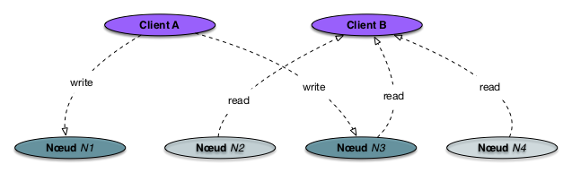
Fig. 59 Paramétrage avec W=2, R=3 et RF=4¶
Le client A effectue une écriture d’un document. La Fig. 59 montre que deux écritures synchrones ont été effectuées, sur les nœuds \(N_1\) et \(N_3\) (en vert foncé). Les deux autres copies, sur \(N_2\) et \(N_4\) sont en attente des écritures asynchrones et ne sont donc pas en phase.
Le client B effectue une lecture du même document. Comme R=3, il doit lire au moins 3 des 4 copies avant de répondre au client. En lisant (par exemple) sur \(N_2\), \(N_3\) et \(N_4\), il va trouver la version la plus récente sur \(N_3\) et on obtient donc une cohérence forte.
On peut établir la formule suivante qui guarantit la cohérence forte:
Critère de cohérence forte
La cohérence forte est assurée si \(R + W > RF\).
L’intuition est qu’il existe dans ce cas un recouvrement entre les réplicas lus et les derniers réplicas écrits, de sorte qu’au moins une lecture va accéder à la dernière version. C’est ce qui est illustré par la Fig. 59, mais plusieurs autres situations sont possibles. En supposant RF=4:
si W=4 et R=1: on se satisfait d’une lecture, mais comme tous les écritures sont synchronisées, on est sûr qu’elle renvoie la dernière mise à jour.
si W=1 et R=4, le raisonnement réciproque amène à la même conclusion
si W=3 et R=2, on équilibre un peu mieux la latence entre écritures et lectures. En lisant 2 copies sur les 4 existantes, dont 3 sont synschrones, on est sûr d’obtenir la dernière version.
Le quorum est la valeur \(\lfloor \frac{RF}{2} \rfloor + 1\), où \(\lfloor x \rfloor\) désigne l’entier immédiatement inférieur à une valeur \(x\). Le quorum est par exemple 3 pour RF=4 ou RF=5. En fixant dans un système W=QUORUM et R=QUORUM, on est sûr d’être cohérent: c’est la configuration la plus flexible, car s’adaptant automatiquement au niveau de réplication.
Réplication et reprise sur panne¶
Voyons maintenant comment la réplication permet la reprise sur panne. Nous allons considérer la topologie maître-esclave, la plus courante. La situation de départ est illustrée par la Fig. 60. Tous les nœuds sont interconnectés et se surveillent les uns les autres par envoi périodique de courts messages dits heartbeats.
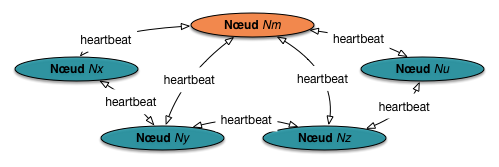
Fig. 60 Surveillance par heartbeat dans un système distribué¶
Si l’un des nœuds-esclaves disparaît, la parade est assez simple: le nœud-maître va rediriger les requêtes des applications clientes vers les nœuds contenant des copies, et initier une nouvelle réplication pour revenir à une situation où le nombre de copies est au niveau requis. Si, par exemple, le nœud \(N_x\) disparaît, le maître \(N_m\) sait que l’esclave \(N_y\) contient une copie des données disparues (en reprenant les exemples de réplication donnés précédemment) et redirige les lectures vers \(N_y\). Les copies placées sur \(N_y\) doivent également être répliquées sur un nouveau serveur.
Si le nœud-maître disparaît, les nœuds-esclaves doivent élire un nouveau maître (!) pour que ce nouveau maître soit opérationnel, il faut probablement qu’il récupère des données administratives (configuration de la grappe de serveur) qui elles-mêmes ont dû être répliquées au préalable pour être toujours disponibles. Les détails peuvent varier d’un système à l’autre (nous verrons des exemples) mais le principe et là aussi de s’appuyer sur la réplication.
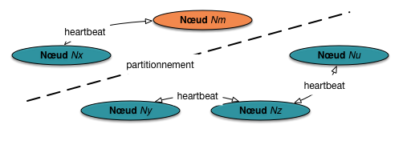
Fig. 61 Un partitionnement réseau.¶
Tout cela fonctionne, sous réserve que la condition suivante soit respectée: toute décision est prise par une sous-grappe comprenant la majorité des participants. Considérons le cas de la Fig. 61. Un partitionnement du réseau a séparé la grappe en deux sous-ensembles. Si on applique la méthode de reprise décrite précédemment, que va-t-il se passer?
le maître survivant va essayer de se débrouiller avec l’unique esclave qui lui reste;
les trois esclaves isolés vont élire un nouveau maître.
On risque de se retrouver avec deux grappes agissant indépendamment, et une situation à peu près ingérable (divergence des données, perturbation des applications clientes, etc.)
La règle (couramment établie dans les systèmes distribués bien avant le NoSQL) est qu’un maître doit toujours régner sur la majorité des participants. Pour élire un nouveau maître, un sous-groupe de nœuds doit donc atteindre le quorum de \(\frac{n}{2}+1\), où n est le nombre initial de nœuds. Dans l’exemple de la Fig. 61, le maître existant est rétrogradé au rang d’esclave, et un nouveau maître est élu dans le second sous-groupe, le seul qui continuera donc à fonctionner.
L’algorithme pour l’élection d’un maître relève des méthodes classiques en systèmes distribués. Voir par exemple l’algorithme Paxos.
Culture: le théorème CAP¶
Le moment est venu de citer une propriété (ou une incomplétude), énoncée par le théorème CAP. L’auteur (E. Brewer) ne l’a en fait pas présenté comme un « théorème » mais comme une simple conjecture, voire un constat pratique sans autre prétention. Il a ensuite pris le statut d’une vérité absolue. Examinons donc ce qu’il en est.
Le théorème CAP
Un système distribué orienté données ne peut satisfaire à chaque instahnt que deux des trois propriétés suivantes
la cohérence (le « C »): toute lecture d’une donnée accède à sa dernière version;
la disponibilité (le « A » pour availability): toute requête reçoit une réponse, sans latence excessive;
la tolérance au partitionnement (le « P »): le système continue de fonctionner même en cas de partionnement réseau.
Ce théorème est souvent cité sans trop réfléchir quand on parle des systèmes NoSQL. On peut le lire en effet comme une justification du choix de ces systèmes de privilégier la disponibilité et la tolérance au partitionnement (reprise sur panne), en sacrifiant partiellement la cohérence. Ce seraient donc des systèmes AP, alors que les systèmes relationnels seraient plutôt des systèmes CP. Cette interprétation un peu simpliste mérite qu’on aille voir un peu plus loin.
L’intuition derrière le théorème CAP est relativement simple: si une partition réseau intervient, il ne reste que deux choix possibles pour répondre à une requête: soit on répond avec les données (ou l’absence de données) dont on dispose, soit on met la requête en attente d’un rétablissement du réseau. Dans le premier cas on sacrifie la cohérence et on obtient un système de type AP, dans le second on sacrifie la disponibilité et on obtient un système de type CP.
Qu’en est-il alors de la troisième paire du triangle des propriétés, AC, « Cohérent et Disponible mais pas tolérant au Partitionnement »? Cette troisième branche est en fait un peu problématique, car on ne sait pas ce que signifie précisément « tolérance au Partitionnement ». Comment peut-on rester cohérent et disponible avec une panne réseau? Il faut bien sacrifier l’un des deux et on se retrouve donc devant un choix AP ou CP: le côté AC ressemble bien à une impasse.
Il existe donc une asymétrie dans l’interprétation du théorème CAP. On commence par une question : « Existe-t-il un partitionnement réseau ». Si oui on a le choix entre deux solutions: sacrifier la cohérence ou sacrifier la disponibilité.
Caractériser les systèmes NoSQL comme ceux qui feraient le choix de sacrifier la cohérence en cas de partitionnement apparaît alors comme réducteur. Si c’était le cas, en l’absence de partitionnement, ils auraient la cohérence et la disponibilité, or on s’aperçoit que ce n’est pas le cas: la cohérence est (partiellement) sacrifiée par le choix d’une stratégie de réplication asynchrone afin de favoriser un quatrième facteur, ignoré du théorème CAP: la latence (ou temps de réponse).
La Fig. 62 résume le raisonnement précédent. Il correspond au modèle PACELC (le “E” vient du “Else”, représenté par un “Non” dans la figure) proposé dans cet article http://www.cs.umd.edu/~abadi/papers/abadi-pacelc.pdf que je vous encourage à lire attentivement.
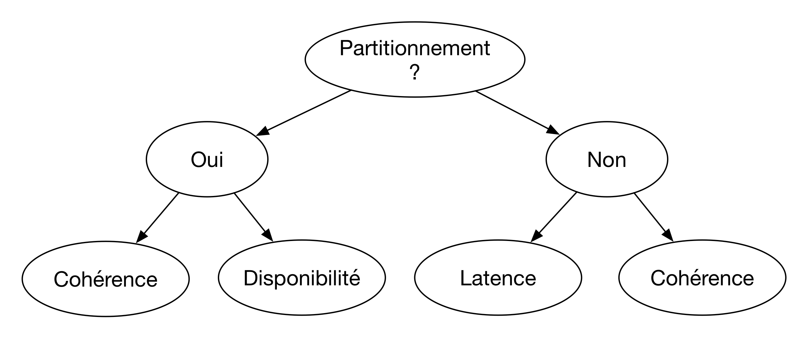
Fig. 62 Le modèle PACELC, un CAP réorganisé et complété avec la latence¶
Tout cela nous ramène toujours au constat suivant: il faut toujours réfléchir indépendamment, lire attentivement les arguments et les peser, plutôt que d’avaler des slogans courts mais souvent mal compris. Qu’est-ce qu’un système NoSQL en prenant en compte ces considérations? La définition devient un peu plus complexe: c’est un système de gestion de données distribuées qui doit être tolérant au partitionnement, mais qui même en l’absence de partitionnement peut accepter de compromettre la cohérence au profit de la latence.
Les trois systèmes que nous allons étudier dans ce qui suit gagneront à être interprétés dans cette optique explicative.


{kind=link}
{kind=link}
{kind=link}
{kind=link}
{kind=link}
{kind=link}
{kind=link}
{kind=link}
S2: réplication dans MongoDB¶
Supports complémentaires
MongoDB présente un cas très représentatif de gestion de la réplication et des reprises sur panne. La section qui suit est conçue pour accompagner une mise en œuvre pratique afin d’expérimenter les concepts étudiés précédemment. Si vous disposez d’un environnement à plusieurs machines, c’est mieux! Mais si vous n’avez que votre portable, cela suffit: les instructions données s’appliquent à ce dernier cas, et sont faciles à transposer à une véritable grappe de serveurs.
Les replica set¶
Une grappe de serveurs partageant des copies d’un même ensemble de documents est appelée un replicat set (RS) dans MongoDB. Dans un RS, un des nœuds joue le rôle de maître (on l’appelle primary); les autres (esclaves) sont appelés secondaries. Nous allons nous en tenir à la terminologie maître-esclave pour rester cohérent.
Note
Une version ancienne de MongoDB fonctionnait en mode dit « maître-esclave ». L’évolution de MongoDB (notamment avec la mise au point d’une méthode de failover automatique) a amené un changement de terminologie, mais les concepts restent identiques à ceux déjà présentés.
Un RS contient typiquement trois nœuds, un maître et deux esclaves. C’est un niveau de réplication suffisant pour assurer une sécurité presque totale des données. Dans une grappe MongoDB, on peut trouver plusieurs replica sets, chacun contenant un sous-ensemble d’une très grande collection: nous verrons cela quand nous étudierons le partitionnement. Pour l’instant, on s’en tient à un seul replica set.
{kind=link}
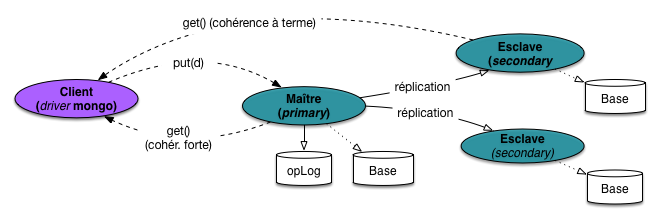
Fig. 63 Un replica set dans MongoDB¶
La Fig. 63 montre le fonctionnement de MongoDB, à peu de chose près identique
à celui décrit dans la section générale. Le maître est ici chargé du stockage de la donnée
principale. L’écriture dans la base est paresseuse, et un journal des transactions est
maintenu par le maître (c’est une collection spéciale nommée opLog). La réplication
vers les deux esclaves se fait en mode asynchrone.
Deux niveaux de cohérence sont proposés par MongoDB. La cohérence forte est obtenue en imposant au client d’effectuer toujours les lectures via le maître. Dans un tel mode, les esclaves ne servent pas à répartir la charge, mais jouent le rôle restreint d’une sauvegarde/réplication continue, avec remplacement automatique du maître si celui-ci subit une panne. On ne constatera aucune différence dans les performances avec un système constitué d’un seul nœud.
Important
La cohérence forte est le mode par défaut dans MongoDB.
La cohérence à terme est obtenue en autorisant les clients (autrement dit, très concrètement, le driver MongoDB intégré à une application) à effectuer des lectures sur les esclaves. Dans ce cas on se retrouve exactement dans la situation déjà décrite dans le commentaire de la Fig. 58.
La reprise sur panne dans MongoDB¶
Tous les nœuds participant à un replica set échangent des messages de surveillance. La procédure de failover (reprise sur panne) est identique à celle décrite dans la section précédente, avec élection d’un nouveau maître par la majorité des nœuds survivants en cas de panne.
Pour assurer qu’une élection désigne toujours un maître, il faut que le nombre de votants soit impair. Pour éviter d’imposer l’ajout d’un nœud sur une machine supplémentaire, MongoDB permet de lancer un serveur mongod en mode « arbitre ». Un nœud-arbitre ne stocke pas de données et en général ne consomme aucune ressource. Il sert juste à atteindre le nombre impair de votants requis pour l’élection. Si on ne veut que deux copies d’un document, on définira donc un replica set avec un maître, un esclave et un arbitre (tous les trois sur des machines différentes).
À l’action: créons notre replica set¶
Passons aux choses concrètes. Nous allons créer un replica set avec trois nœuds avec Docker. Chaque nœud
est un serveur mongod qui s’exécute dans un conteneur. Ces serveurs doivent pouvoir communiquer entre
eux par le réseau. Après quelques essais, la solution qui me semble la plus simple est de lancer
chaque serveur sur un port spécial, et de publier ce port sur la machine hôte.
Voici les commandes de création des conteneurs, nommés mongo1, mongo2
et mongo3:
docker run --name mongo1 --net host mongo mongod --replSet mon-rs --port 30001
docker run --name mongo2 --net host mongo mongod --replSet mon-rs --port 30002
docker run --name mongo3 --net host mongo mongod --replSet mon-rs --port 30003
Pour bien comprendre:
l’option
--net hostindique que les ports réseau des conteneurs sont publiés sur la machine-hôte de Docker;l’option
replSetindique que les serveurs mongod sont prêts à participer à un replica set nommémon-rs(donnez-lui le nom que vous voulez).l’option
--portindique le port sur lequel le serveurmongodest à l’écoute; comme ce port est publié sur la machine hôte, en combinant l’IP de cette dernière et le port, on peut s’adresser à l’un des trois serveurs.
Vous pouvez lancer ces commandes dans un terminal configuré pour dialoguer avec Docker. Si vous
utilisez Kitematic, lancez un terminal depuis l’interface à partir du menu File.
Une fois créés, les trois conteneurs sont visibles dans Kitematic, on peut les stopper ou les relancer.
Note
On suppose dans ce qui suit que l’IP de la machine-hôte est 192.168.99.100.
Tout est prêt, il reste à lancer les commandes pour connecter les nœuds les uns aux autres.
Lancez un client mongo pour vous connecter au premier nœud.
mongo --host 192.168.99.100 --port 30001
Initialisez le replica set, et ajoutez-lui les autres nœuds.
rs.initiate()
rs.add ("192.168.99.100:30002")
rs.add ("192.168.99.100:30003")
Le replica set est maintenant en action! Pour savoir quel nœud a été élu maître, vous pouvez
utiliser la fonction db.isMaster(). Et pour tout savoir sur le replica set:
rs.status()
Regardez attentivement la description des trois participants au replica set. Qui est maître, qui est esclave, quelles autres informations obtient-on?
On peut donc insérer des données, qui devraient alors être répliquées. Connectez-vous au maître (pourquoi?) et insérer (par exemple) notre collection de films.
Note
Rappelons que pour importer la collection vous utiliser mongoimport
mongoimport -d nfe204 -c movies --file movies.json --jsonArray --host <hostIP> --port <xxx>
Ou bien importer le fichier http://b3d.bdpedia.fr/files/movies-mongochef.json avec MongoChef.
Maintenant,
on peut supposer que la réplication s’est effectuée. Vérifions: connectez-vous au maître
et regardez le contenu de la collection movies.
use nfe204
db.movies.find()
Maintenant, faites la même chose avec l’un des esclaves. Vous obtiendrez sans doute un message d’erreur.
Ré-essayez après avoir entré la commande rs.slaveOk(). À vous de comprendre ce qui se passe.
Vous pouvez faire quelques essais supplémentaires:
insérer en vous adressant à un esclave,
insérer un nouveau document avec un autre client (par exemple RoboMongo) et regarder quand la réplication est faite sur les esclaves,
arrêter les serveurs, les relancer un par un, regarder sur la sortie console comment MongoDB cherche à reconstituer le replica set, le maître est-il toujours le même?
et ainsi de suite: en bref, vérifiez que vous êtes en mesure de comprendre ce qui se passe, au besoin en effectuant quelques recherche ciblées sur le Web.
Testons la reprise sur panne¶
Pour vérifier le comportement de la reprise sur panne nous allons (gentiment) nous débarasser de notre maître. Vous pouvez l’arrêter depuis Docker, ou entrer la commande suivante avec un client connecté au Maître.
use admin
db.shutdownServer()
Maintenant consultez les consoles pour regarder ce qui se passe. C’est un peu comme donner un coup de pied dans une fourmilière: tout le monde s’agite. Essayez de comprendre ce qui se passe. Qui devient le maître? Vérifiez, puis redémarrez le premier nœud maître. Vérifiez qu’une nouvelle élection survient. Qui est encore le maître à la fin?
Mise en pratique¶
MEP Ex-MEP-1: comprendre la documentation
Consultez la documentation en ligne MongoDB, et étudiez les points suivants
qu’est-ce que la notion de write concern, à quoi cela sert-il?
qu’est-ce que la notion de rollback dans MongoDB, dans la cadre de la reprise sur panne?
expliquez la notion d’idempotence et son utilité pour le journal des transactions (aide: lire la documentation sur l”oplog).
MEP Ex-MEP-2: gérer une vraie grappe de serveurs
Cet exercice ne vaut que si vous avez une grappe de serveurs à votre disposition. Il est particulièrement conçu pour les exercices en direct du cours NFE204, en salle machine.
Définissez votre grappe de serveurs (par exemple, toutes les machines d’une même rangée forment un grappe).
Important
un replica set peut avoir au plus 7 nœuds votants.
Si vous voulez avoir plus de 7 nœuds, certains doivent être configurés
comme non-votants (chercher non-voting-members dans la documentation en ligne).
Définissez le nom de votre replica set (par exemple « rang7 »).
créez le replica set avec tous les serveurs de la grappe; identifiez le maître;
insérez des données dans une collection commune, surveillez la réplication;
tuez (gentiment) quelques-uns des esclaves, regardez ce qui se passe au niveau des connexions et échanges de messages (les serveurs impriment à la console);
tuez le maître et regardez qui est nouvellement élu;
essayez de tuer au moins la moitié des participants au même moment et regardez ce qui se passe avec ce pauvre replica set.
ajoutez un quatrième nœud, comment se passe l’élection?
ajoutez un nœud-arbitre, même question.
S3: ElasticSearch¶
Supports complémentaires
ElasticSearch est un moteur de recherche distribué bâti sur les index Lucene, comme Solr. Contrairement à Solr, il a été conçu dès l’origine pour un déploiement dans une grappe de serveur et bénéficie en conséquence d’une facilité de configuration et d’installation incomparables.
Lancement du cluster¶
Vous avez déjà installé ElasticSearch avec Docker avec un unique serveur. Nous allons maintenant
créer une grappe (un cluster) de plusieurs nœuds ElasticSearch et tester le comportement
du système. Pour éviter de lancer beaucoup de commandes complexes, nous allons utiliser
docker-compose, un utilitaire fourni avec le Docker Desktop qui permet de regrouper
les commandes et les configurations. Nous vous fournissons plusieurs fichiers YAML
de paramétrage correspondant aux essais successifs de configuration que nous allons effectuer.
Il suffit de passer le nom du fichier à docker-compose de la manière suivante:
docker-compose -f <nom-du-fichier.yml> up
Important
Il faut allouer au moins 4GB de mémoire RAM au Docker Desktop pour le système distribué que nous allons créer. Ouvrez votre interface Docker Desktop et indiquez bien 4GB pour l’option « Resources -> memory ».
Le premier fichier est dock-comp-es1.yml. Voici son contenu.
version: '2.2'
services:
es01:
image: docker.elastic.co/elasticsearch/elasticsearch:7.9.3
container_name: es01
environment:
- node.name=es01
- cluster.name=ma-grappe-es
- discovery.seed_hosts=es01,es02
- cluster.initial_master_nodes=es01,es02
ports:
- 9200:9200
es02:
image: docker.elastic.co/elasticsearch/elasticsearch:7.9.3
container_name: es02
environment:
- node.name=es02
- cluster.name=ma-grappe-es
- discovery.seed_hosts=es01,es02
ports:
- 9201:9200
On crée donc (pour commencer) deux nœuds Elastic Search, es01 et es02. Ces deux nœuds
sont placés dans une même grappe nommée ma-grappe-es (il va sans dire que les noms
sont arbitraites et n’ont aucune signification propre). Le premier va être en écoute (pour
les clients REST) sur le port 9200, le second sur le port 9201.
Le paramètre discovery.seed_hosts indique à chaque nœud les autres nœuds du cluster
avec lesquels il doit se connecter et dialoguer. Au lancement, es01 et es02 vont donc pouvoir
se connecter l’un à l’autre et échanger des informations.
Elastic Search fonctionne en mode Maître-esclave.
Parmi les informations importantes se trouve la liste initiale des maîtres-candidats du cluster. Ici cette
liste est donnée pour le nœud es01 qui la communiquera ensuite à tous les autres nœuds. L’ensemble
des nœuds ayant un statut de maître-candidat vont alors organiser une élection pour
choisir le nœud-maitre du cluster, qui dans ElasticSearch se charge de la gestion de la grappe,
et notamment de l’ajout/suppression de nouveaux nœuds et des reprises sur panne.
Dans le répertoire où vous avez placé ce fichier, exécutez la commande.
docker-compose -f dock-comp-es1.yml up
L’utilitaire va créer les deux nœuds et les mettre en communication. Après le lancement,
un accès avec votre navigateur (ou avec cUrl) à http://localhost:9200 devrait renvoyer un document JSON semblable à
celui-ci:
{
"name": "7a46670f6a9e",
"cluster_name": "ma-grappe-es",
"cluster_uuid": "89U3LpNhTh6Vr9UUOTZAjw",
"version": {
"number": "7.9.3",
"...": "...",
"lucene_version": "8.5.1",
},
"tagline": "You Know, for Search"
}
Même chose pour l’URL à http://localhost:9201. Notre grappe est prête à l’emploi.
L’interface Cerebro¶
Pour une inspection confortable du serveur et des index ElasticSearch, nous
vous conseillons d’utiliser une interface d’administration: cerebro (successeur
de Kopf). Elle peut être téléchargée ici: https://github.com/lmenezes/cerebro.
Vous obtenez un répertoire cerebro-xx-yy-zz. Il faut exécuter le programme
bin/cerebro de ce répertoire.
Sous Unix/Linux, voici la séquence de commandes correspondante :
wget https://github.com/lmenezes/cerebro/releases/download/v0.9.2/cerebro-0.9.2.tgz
tar -xvzf cerebro-0.9.2.tgz; cd cerebro-0.9.2;
./bin/cerebro
Testez que tout fonctionne en visitant (avec un navigateur de votre machine)
l’adresse http://localhost:9000/#/connect, en saisissant l’adresse d’un des serveurs
Elasticsearch dans la première fenêtre (par exemple http://localhost:9200/,
mais http://localhost:9201/ fonctionne également).
Vous
devriez obtenir l’affichage de la Fig. 64 montrant les nœuds
et proposant tout un ensemble
d’actions. En particulier, la barre supérieure de l’interface propose
un bouton
nodes, pour inspecter les nœuds de la grappe.un bouton
rest, permettant d’accéder à un espace de travail optimisé pour éditer des requêtes et vérifier les résultats.
La Fig. 64 montre nos deux nœuds. Regardez soigneusement les informations données, et cherchez par exemple quel est le maître.
{kind=link}
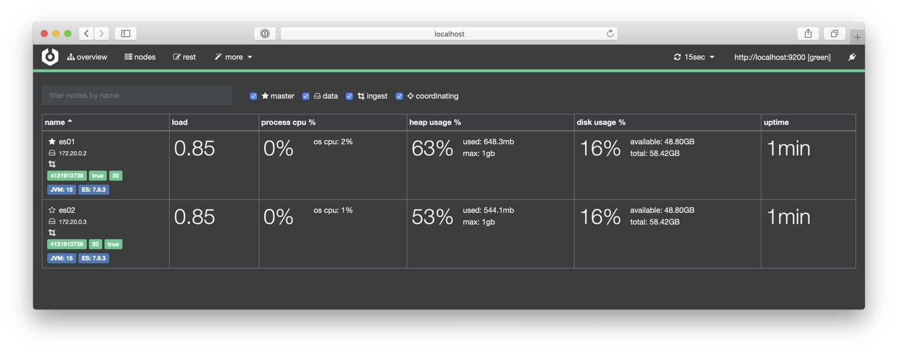
Fig. 64 Cerebro montrant les nœuds de notre grappe initiale ElasticSearch¶
Remarquez qu’un nœud peut tenir plusieurs rôles (master, data, etc.). L’étude de ces rôles fait l’objet d’un exercice en fin de chapitre.
Le jeu de données¶
Pour charger des données, récupérez notre collection de films, au format JSON adapté à l’insertion en masse
dans ElasticSearch, sur le site https://deptfod.cnam.fr/bd/tp/datasets/. Le fichier
se nomme films_esearch.json.
Ensuite, importez les documents dans Elasticsearch avec la commande suivante (en
étant placé dans le dossier où a été récupéré le fichier):
curl -s -XPOST http://localhost:9200/_bulk/ -H 'Content-Type: application/json' --data-binary @films_esearch.json
En accédant à l’interface Cerebro, vous devriez alors obtenir l’affichage de la Fig. 65.
{kind=link}
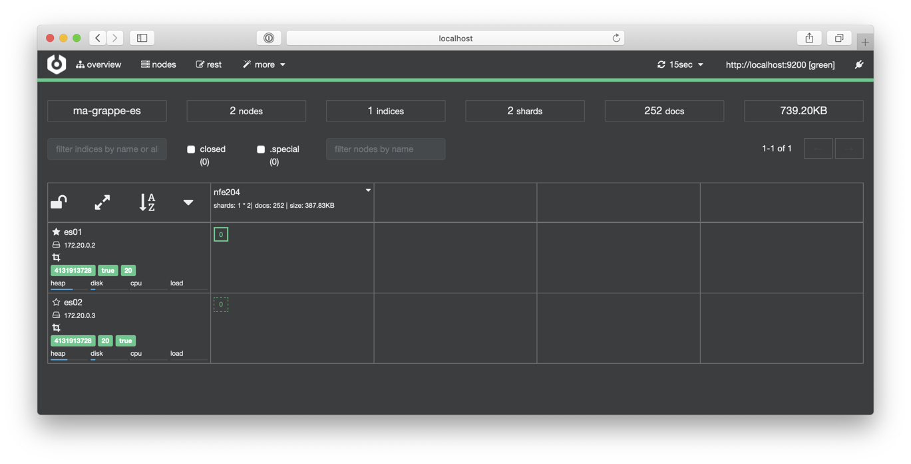
Fig. 65 Cerebro montrant l’index répliqué¶
Que constate-t-on? Les nœuds es01 es02 apparaissent associés à des rectangles verts
qui représentent l’index ElasticSearch, nommé nfe204, stockant les quelques centaines de films de notre jeu
de données.
Un des rectangles est surbrillant et entouré d’un trait plein: c’est la copie primaire de l’index, celle sur laquelle s’effectuent les écritures, qui sont ensuite répliquées en mode asynchrone sur les autres copies.
Il existe une distinction dans ElasticSearch entre la notion de master, désignant le nœud responsable de la gestion du cluster, et la notion de copie primaire qui désigne le nœud stockant la copie sur laquelle s’effectuent en priorité les écritures. La copie primaire peut être sur un autre nœud que le master. Un système de routage permet de diriger une requête d’écriture vers la copie primaire, quel que soit le nœud de la grappe auquel la requête est adressée. Voir l’exercice en fin de chapitre sur ces notions.
En revanche, dans Elastic Search, chaque nœud peut répondre aux requêtes de lectures. Il est donc possible qu’une écriture ait lieu sur la copie primaire, puis une lecture sur la copie secondaire, avant réplication, donnant donc un résultat obsolète, ou incohérent. Dès que la réplication est achevée, la cohérence est rétablie. Dans un moteur de recherche, la cohérence à terme est considérée comme tout à fait acceptable.
Changeons la réplication¶
Commençons quelques manipulations de notre index nfe204. Par défaut, ElasticSearch
effectue une réplication de chaque document. Nous souhaitons en faire deux pour avoir trois
copies au total, ce qui est considéré comme une sécurité suffisante. Pour modifier
ce paramètre, on effectue la commande suivante:
curl -X PUT "localhost:9200/nfe204/_settings?pretty" -H 'Content-Type: application/json' -d' { "number_of_replicas": 2 }'
La Fig. 66 montre ce que vous devez obtenir. L’index a trois copies, mais seulement deux nœuds. Un signe d’avertissement est apparu indiquant que l’une des copies manque d’un nœud pour être hébergée.
{kind=link}
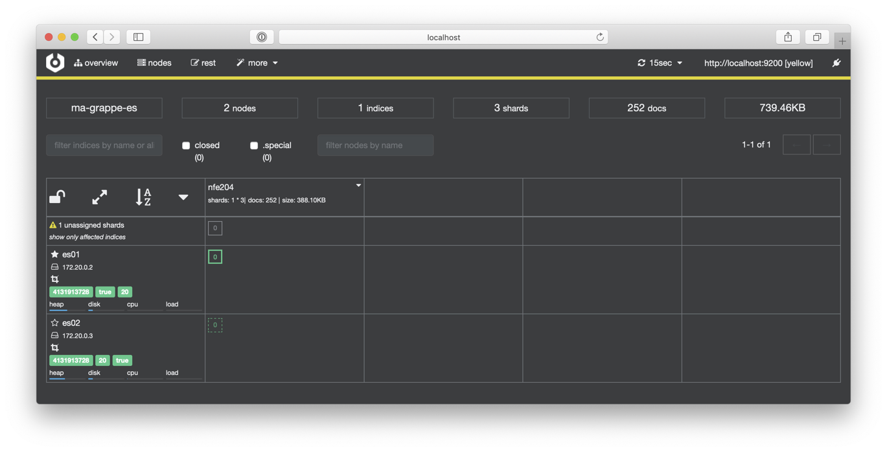
Fig. 66 Cerebro montrant l’index avec 3 copies mais seulement 2 nœuds.¶
Il faut donc ajouter un nœud. Dans le fichier de configuration, on ajoute es3 comme suit:
es03:
image: docker.elastic.co/elasticsearch/elasticsearch:7.9.3
container_name: es03
environment:
- node.name=es03
- cluster.name=ma-grappe-es
- discovery.seed_hosts=es01,es02
ports:
- 9202:9200
Le nœud s’appelle es3, il fait partie de la même grappe, et on lui indique qu’il peut se connecter
aux nœuds es01 ou es02 pour récupérer la configuration actuelle de la grappe, et notamment
son nœud-maitre.
On obtient un fichier dock-comp-es2.yml
que vous pouvez récupérer. Arrêtez l’exécution du docker-compose en cours et
relancez-le
docker-compose -f dock-comp-es2.yml up
En consultant Cerebro, vous devriez obtenir l’affichage de la Fig. 67,
avec ses trois nœuds en vert, dont la copie primaire stockée sur le maître es01. Tout va bien!
{kind=link}
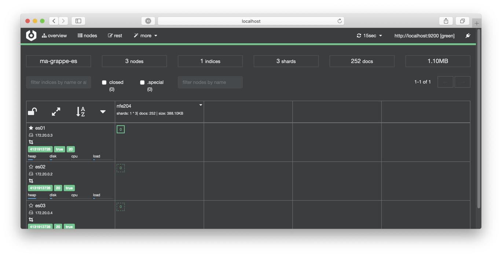
Fig. 67 Cerebro montrant l’index avec 3 copies mais seulement 2 nœuds.¶
Important
En production, on ne procède évidemment pas à un arrêt et un redémarrage de l’ensemble des nœuds. Et d’ailleurs la configuration est plus complexe.
Reprise sur panne¶
Regardons plus précisément le fonctionnement de la réplication et de la reprise sur panne. ElasticSearch fonctionne en mode Maître-Esclave, avec reprise sur panne automatisée. Faites maintenant l’essai: interrompez le nœud-maître avec Docker.
Avec la commande
docker ps -acherchez l’indentifiant du nœud maître (en principees01)Arrêtez-le avec
docker stop <identifant>
La communication de Cerebro avec le nœud sur le port 9200 est interrompue. En revanche vous
pouvez connecter Cerebro au nœud du port 9201 (es02). Vous obtenez l’affichage de la
Fig. 68.
{kind=link}
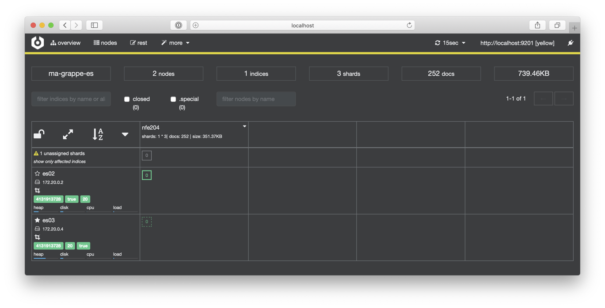
Fig. 68 Cerebro montrant l’index après panne de es01¶
Bonne nouvelle: le nœud maître est maintenant es03 et la copie primaire de l’index est
sur es02. L’index peut donc continuer à fonctionner. Mais c’est en mode dégradé:
un de ses replicas est marqué comme « Unassigned » : il faut redémarrer le nœud es01
pour que la grappe retrouve un statut sain avec les trois copies sur trois nœuds
différents.
Relancez le nœud es01 avec la commande docker start <identifiant>: tout devrait rentrer
dans l’ordre. Par rapport à la situation avant la panne, le maître a changé, et la copie
primaire a également changé.
Vous avez tout compris? Passez au quiz. Les exercices en fin de chapitre proposent également un approfondissent de plusieurs notions survolées ici.
Mise en pratique¶
MEP Ex-MEP-ES1: mise en pratique
Vous êtes invités à reproduire les commandes ci-dessus pour créer votre index ElasticSearch et tester la reprise sur panne. Testez d’abord sur une machine isolée, puis (si vous êtes en salle de TP) groupez-vous pour former des grappes de quelques serveurs, et testez les commandes de création (envoyez des insertions sur les différents nœuds) et de recherche (idem).
MEP Ex-MEP-ES2: pour aller plus loin (optionnel)
Quelques questions intéressantes à creuser (en regardant la doc, en interrogeant Google). Ces questions peuvent former le point de départ d’une étude plus complète consacrée à ElasticSearch.
Si j’envoie des commandes d’insertion à n’importe quel nœud, est-ce que cela fonctionne? Cela signifie-t-il qu’ElasticSearch est en mode multinœuds et pas en mode maître-esclave? Cherchez les mot-clés « primary shard » pour étudier la question.
Comment exploiter la disponibilité des mêmes données sur plusieurs nœuds pour améliorer les performances? Cherchez les mots-clés ElasticSearch balancer et faites des essais.
La valeur par défaut du nombre de réplicas est 1: cela signifie qu’il existe une copie primaire et un réplica, soit deux nœuds. Mais nous savons qu’en cas de partitionnement réseau nous risquons de nous retrouver avec deux maitres?! Etudiez la solution proposée par ElasticSearch.
S4: Cassandra¶
Ressources complémentaires
Vidéo à venir
Nous passons maintenant à une présentation de la réplication dans Cassandra. Un cluster Cassandra fonctionne en mode multi-nœuds. La notion de nœud maître et nœud esclave n’existe donc pas. Chaque nœud du cluster a le même rôle et la même importance, et jouit donc de la capacité de lecture et d’écriture dans le cluster. Un nœud ne sera donc jamais préféré à un autre pour être interrogé par le client.
Un client qui interroge Cassandra contacte un nœud au hasard parmi tous les nœuds du cluster. Ce nœud que l’on appellera le coordinateur va gérer la demande d’écriture.
Le facteur de réplication est le paramètre du Keyspace qui précise le nombre de réplicas qui seront utilisés. Le facteur de réplication par défaut est de 1, signifiant que la ressource (la ligne dans une table Cassandra) sera stockée sur un seul nœud; 3 est la valeur du facteur de réplication considérée comme optimale pour assurer la disponibilité complète du système.
Le facteur de réplication est un indicateur qui précise le nombre final de copies du document dans le cluster. Si le facteur est de 3, il ne sera donc pas écrit 1 fois, puis répliqué 3 fois, mais écrit 1 fois, et répliqué 2 fois. Considérons pour l’instant que nous avons un cluster composé de 3 nœuds, et un facteur de réplication de 3. Comme expliqué précédemment, n’importe quel nœud peut recevoir la requête du client. Ce nœud, que l’on nommera coordinateur, va écrire localement la ressource, et rediriger la requête d’écriture vers les 2 autres nœuds suivant.
Note
Nous verrons dans le prochain chapitre que Cassandra effectue non seulement une réplication mais également un partitionnement des données, ce qui complique un peu le schéma présenté ci-dessus. Nous nous concentrons ici sur la réplication.
Ecriture et cohérence des données¶
Cassandra dispose de paramètres de configuration avancés qui servent à ajuster le compromis entre latence et cohérence. Tout ce qui suit est un excellent moyen de constater la mise en pratique des compromis nécessaires dans un système distribué entre disponibilité, latence, cohérence et tolérance aux pannes. Relire le début du chapitre (et la partie sur CAP et PACELC) si nécessaire.
Mécanisme d’écriture¶
Commençons par regarder de près le mécanisme d’écriture de cassandra (Fig. 69). Il s’appuie sur des concepts que nous connaissons déjà, avec quelques particularités qui sont reprises de l’architecture de BigTable (d’où l’affirmation parfois rencontrée, mais rarement explicitée, que Cassandra emprunte pour sa conception à Dynamo ET à BigTable).
Une application cliente a donc pris contact avec un des serveurs, que nous appelons le coordinateur (Fig. 69).
{kind=link}
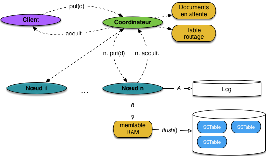
Fig. 69 Le mécanisme d’écriture Cassandra¶
Ce dernier reçoit une demande d’écriture d’un document d. Ce document est immédiatement écrit dans le fichier log (flèche A) et placé dans une structure en mémoire, appelée memtable (flèche B). À ce stade, on peut considérer que l’écriture est effectuée de manière durable.
Important
Notez sur la figure une zone mémoire, sur le coordinateur, nommée « Documents en attente ». Elle sert à stocker temporairement de demandes d’insertion qui n’ont pu être complètement satisfaites. Détails plus loin.
La figure donne quelques détails supplémentaires sur le stockage des documents sur disque. Quand la memtable est pleine, un flush() est effectué pour transférer son contenu sur disque, dans un fichier structuré sous forme de SSTable. Essentiellement, il s’agit d’une table dans laquelle les documents sont triés. L’intérêt du tri est de faciliter les recherches dans les SSTables. En effet:
il est possible d’effectuer une recherche par dichotomie, ou de construire un index non dense (cf. http://sys.bdpedia.fr/arbreb.html pour des détails);
il est facile et efficace de fusionner plusieurs SSTables en une seule pour contrôler la fragmentation.
Ce mécanisme de maintien d’un stockage contenant des documents triés sur la clé est repris de BigTable, et est toujours utilisé dans son successeur, HBase. Vous pouvez vous reporter à la documentation de ce dernier, ou à l’article initial https://research.google.com/archive/bigtable.html pour en savoir plus.
Note
Le tri des documents (ou rows) Cassandra est effectué sur des attributs spécifiés sous forme de compound key. Faites une recherche dans la documentation officielle sur les termes compound key et clustering pour des détails.
Paramétrage de la cohérence (écritures)¶
Avec Cassandra, la cohérence des données en écriture est paramétrable. Ce paramétrage est nécessaire pour affiner la stratégie à adopter en cas de problèmes d’écriture.
Supposons par exemple que l’un des nœuds sur lesquels on doit écrire un document soit indisponible. Lorsque cela arrive, le coordinateur peut attendre que le nœud soit de nouveau actif avant d’écrire. Bien entendu, rien ne l’empêche d’écrire sur les autres réplicas. Lorsque le coordinateur attend la remise à disponibilité du nœud, il stocke alors la ressource localement, dans la zone que nous avons nommée « Documents en attente » sur la Fig. 69.
Si aucun nœud n’est disponible, le document n’est pas à proprement parler dans le cluster pendant cette attente. Il n’est donc pas disponible à la lecture. Ce cas de figure (extrême) s’appelle un Hinted Handoff.
La configuration du niveau de cohérence des écritures consiste à indiquer combien d’acquittements le coordinateur doit rececoir des nœuds de stockage avant d’acquitter à son tour le client. Voici les principales configurations possibles. Elles vont de celle qui maximise la disponibilité du système à celles qui maximisent la cohérence des données.
ANY : Si tous les nœuds sont inactifs, alors le Hinted Handoff est appliqué: le document est écrit dans une zone temporaire, en attente d’une nouvelle tentative d’écriture. La cohérence est minimale puisqu’aucune lecture ne peut accéder au document! C’est la stratégie qui rend le système le plus disponible. En l’occurrence, c’est aussi la stratégie la plus dangereuse: si le nœud qui détient la zone temporaire tombe en panne, que se passe-t-il?
ONE (TWO, THREE) : La réponse au client sera assurée si la ressource a été écrite sur au moins 1 (ou 2, ou 3) réplicas.
QUORUM : La réponse au client sera assurée si la ressource a été écrite sur un nombre de réplicas au moins égal à \(\lfloor replication/2 \rfloor +1\). Avec un facteur de réplication de 3, il faudra donc (\(\lfloor 3/2 \rfloor +1 = 2\) réponses). C’est un très bon compromis, car la règle du quorum va s’adapter au nombre de réplicas considéré
ALL : La réponse au client sera assurée lorsque la ressource aura été écrite dans tous les réplicas. C’est la stratégie qui assure la meilleure cohérence des données, au prix de la disponibilité
Comme dans d’autres systèmes de bases de données de type NoSQL, la stratégie à adopter pour assurer la cohérence des données en écriture est souvent affaire de compromis. Plus on fait en sorte que le système soit disponible, plus on s’expose à des lectures incohérentes, retournant un version précédente du document, ou indiquant qu’il n’existe pas. À contrario, si on veut assurer la meilleure cohérence des données, alors il faut s’assurer pour chaque écriture que la ressource a été écrite partout, ce qui rend du coup le système beaucoup moins disponible.
Lecture et cohérence des données¶
Comme pour l’écriture de données, il existe des stratégies de cohérence de données en lecture. Certaines stratégies vont optimiser la réactivité du système, et donc sa disponibilité. D’autres vont mettre en avant la vérification de la cohérence des ressources, au détriment de la disponibilité.
Mécanisme de lecture¶
La lecture avec Cassandra est plus coûteuse que l’écriture. Sur chaque nœud, il faut en effet:
chercher le document dans la memtable (en RAM)
chercher également le document dans toutes les SSTables
Cela peut entraîner des accès disques, et donc une pénalité assez forte.
Paramétrage de la cohérence des lectures¶
La configuration consiste à spécifier le nombre de réplicas à obtenir avant de répondre au client. Dans tous les cas, une fois le nombre de réplicas obtenus, la version avec l’estampille la plus récente est renvoyée au client.
Quelques stratégies sont résumées ci-dessous:
ONE (TWO, THREE): Le coordinateur reçoit la réponse du premier réplica (ou de deux, ou de trois) et la renvoie au client. Cette stratégie assure une haute disponibilité, mais au risque de renvoyer un document qui n’est pas synchronisé avec les autres réplicas. Dans ce cas, la cohérence des données n’est pas assurée
QUORUM : Le coordinateur reçoit la réponse de au moins \(\lfloor replication/2 \rfloor +1\) réplicas. C’est la stratégie qui représente le meilleur compromis
ALL : Le coordinateur reçoit la réponse de tous les réplicas. Si un réplica ne répond pas, alors la requête sera en échec. C’est la stratégie qui assure la meilleure cohérence des données, mais au prix de la disponibilité du système
Pour la lecture aussi, la performance du système est affaire de compromis. Pour assurer une réponse qui reflète exactement les ressources stockées en base, il faut interroger plusieurs réplicas (voire tous), ce qui prend du temps. La disponibilité du système va donc être fortement dégradée. Si au contraire, on veut le système le plus disponible possible, alors il faut ne lire la ressource que sur 1 seul réplica, et la renvoyer directement au client. Il faudra dans ce cas accepter qu’il n’est pas impossible que le client reçoive une ressource non synchronisée, et donc fausse.
Lorsque en lecture la ressource n’est pas synchronisée entre les différents réplicas, le coordinateur détecte un conflit. Il déclenche alors deux actions:
le réplica qui a l’estampille temporelle la plus récente parmi ceux reçu est considéré comme celui le plus à jour, et est donc retourné au client;
une procédure de réconciliation est lancée sur cette ressource particulière pour garantir que, au prochain appel, les données seront de nouveau synchronisée.
Il s’ensuit que pour assurer la cohérence des lectures, il faut toujours que la dernière version d’une ressource fasse partie des réplicas obtenus avant réponse au client. Une formule simple permet de savoir si c’est le cas. Si on note
W le nombre de réplicas requis en écriture,
R le nombre de réplicas requis en lecture,
RF le facteur de réplication.
alors la cohérence est assurée si \(R + W > RF\). Je vous laisse y réfléchir: l’intuition (si cela peut aider) est qu’il existe un recouvrement entre les réplicas lus et les derniers réplicas écrits, de sorte qu’au moins une lecture va accéder à la dernière version.
Par exemple,
si W=ALL et R=1: on se satisfait d’une lecture, mais comme tous les écritures sont synchronisées, on est sûr qu’elle renvoie la dernière mise à jour.
si W=1 et R=ALL, le raisonnement réciproque amène à la même conclusion
enfin, si W=QUORUM et R=QUORUM, on est sûr d’être cohérent: c’est la configuration la plus flexible, car s’adaptant automatiquement au niveau de réplication.
Mise en pratique¶
Voici un exemple de mise en pratique pour tester le fonctionnement d’un cluster Cassandra et quelques options. Pour aller plus lon, vous pouvez recourir à l’un des tutoriaux de Datastax, par exemple http://docs.datastax.com/en/cql/3.3/cql/cql_using/useTracing.html pour inspecter le fonctionnement des niveaux de cohérence.
Notre cluster¶
Créons maintenant un cluster Cassandra, avec 5 nœuds. Pour cela, nous créons un premier nœud qui nous servira de point d’accès (seed dans la terminologie Cassandra) pour en ajouter d’autres.
docker run -d -e "CASSANDRA_TOKEN=1" \
--name cass1 -p 3000:9042 spotify/cassandra:cluster
Notez que nous indiquons explicitement le placement du serveur sur l’anneau. En production, il est préférable de recourir aux nœuds virtuels, comme expliqué précédemment. Cela demande un peu de configuration, et nous allons nous contenter d’une exploration simple ici.
Il nous faut l’adresse IP de ce premier serveur. La commande suivant extrait l’information
NetworkSettings.IPAddress du document JSON renvoyé par l’instruction inspect.
docker inspect -f '{{.NetworkSettings.IPAddress}}' cass1
Vous obtenez une adresse. Par la suite on supppose qu’elle vaut 172.17.0.2.
Créons les autres serveurs, en indiquant le premier comme serveur-seed.
docker run -d -e "CASSANDRA_TOKEN=10" -e "CASSANDRA_SEEDS=172.17.0.2" \
--name cass2 spotify/cassandra:cluster
docker run -d -e "CASSANDRA_TOKEN=100" -e "CASSANDRA_SEEDS=172.17.0.2" \
--name cass3 spotify/cassandra:cluster
docker run -d -e "CASSANDRA_TOKEN=1000" -e "CASSANDRA_SEEDS=172.17.0.2" \
--name cass4 spotify/cassandra:cluster
docker run -d -e "CASSANDRA_TOKEN=10000" -e "CASSANDRA_SEEDS=172.17.0.2" \
--name cass5 spotify/cassandra:cluster
Nous venons de créer un cluster de 5 nœuds Cassandra, qui tournent tous en tâche de fond grâce à Docker.
Keyspace et données¶
Insérons maintenant des données. Vous pouvez utiliser le client DevCenter. À l’usage, il est peut être plus rapide de lancer directement l’interpréteur de commandes sur l’un des nœuds avec la commande:
docker exec -it cass1 /bin/bash
[docker]$ cqlsh 172.17.0.X
Créez un keyspace.
CREATE keyspace repli
with replication = {'class':'SimpleStrategy', 'replication_factor':3};
USE repli;
Insérons un document.
CREATE TABLE data (id int, value text, PRIMARY KEY (id));
INSERT INTO data (id, value) VALUES (10, 'Premier document');
Nous venons de créer un keyspace, qui va répliquer les données sur 3 nœuds. Testons que le document inséré précedemment a bien été répliqué sur 2 nœuds.
docker exec -it cass1 /bin/bash
[docker]$ /usr/bin/nodetool cfstats -h 172.17.0.2 repli
Regardez pour chaque nœud la valeur de Write Count. Elle devrait être à 1 pour 3 nœuds
consécutifs sur l’anneau,
et 0 pour les autres. Vérifions maintenant qu’en se connectant à un nœud qui ne contient
pas le document, on peut
tout de même y accéder. Considérons par exemple que le nœud cass1 ne contient pas le document.
docker exec -it cass1 /bin/bash
[docker]$ cqlsh 172.17.0.X
cqlsh > USE repli;
cqlsh:repli > SELECT * FROM data;
Cohérence des lectures¶
Pour étudier la cohérence des données en lecture, nous allons utiliser la ressource stockée, et stopper 2 nœuds Cassandra sur les 3. Pour ce faire, nous allons utiliser Docker. Considérons que la donnée est stockée sur les nœuds cass1, cass2 et cass3
docker pause cass2
docker pause cass3
docker exec -it cass1 /bin/bash
[docker]$ /usr/bin/nodetool ring
Vérifiez que les nœuds sont bien au statut Down.
Nous pouvons maintenant paramétrer le niveau de cohérence des données. Réalisons une requête de lecture.
Le système est paramétré pour assurer la meilleure cohérence des données. On s’attend à ce que la requête plante car en
mode ALL, Cassandra attend la réponse de tous les nœuds.
docker exec -it cass1 /bin/bash
[docker]$ cqlsh 172.17.0.X
cqlsh > use repli;
# devrait renvoyer Consistency level set to ALL.
cqlsh:repli > consistency all;
# devrait renvoyer Unable to complete request: one or more nodes were unavailable.
cqlsh:repli > select * from data;
Comme attendu, la réponse renvoyée au client est une erreur. Testons maintenant le mode ONE, qui devrait normalement
renvoyer la ressource du nœud le plus rapide. On s’attend à ce que la ressource du nœud 172.17.0.X soit renvoyée.
docker exec -it cass1 /bin/bash
[docker]$ cqlsh 172.17.0.X
cqlsh > use repli;
cqlsh:repli > consistency one; # devrait renvoyer Consistency level set to ONE.
cqlsh:repli > select * from data;
Dans ce schéma, le système est très disponible, mais ne vérifie pas la cohérence des données. Pour preuve, il renvoie effectivement la ressource au client alors que tous les autres nœuds qui contiennent la ressource sont indisponibles (ils pourraient contenir une version pus récente). Enfin, testons la stratégie du quorum. Avec 2 nœuds sur 3 perdus, la requête devrait normalement renvoyer au client une erreur.
docker exec -it cass1 /bin/bash
[docker]$ cqlsh 172.17.0.X
cqlsh > use repli;
# devrait renvoyer Consistency level set to QUORUM.
cqlsh:repli > consistency quorum;
# devrait renvoyer Unable to complete request: one or more nodes were unavailable.
cqlsh:repli > select * from data;
Le résultat obtenu est bien celui attendu. Moins de la moitié des réplicas est disponible, la requête renvoie donc une erreur. Réactivons un nœud, et re-testons.
docker unpause cass2
docker exec -it cass1 /bin/bash
[docker]$ nodetool ring
[docker]$ cqlsh 172.17.0.X
cqlsh > use repli;
# devrait renvoyer Consistency level set to QUORUM.
cqlsh:repli > consistency quorum;
cqlsh:repli > select * from data;
Lorsque le nœud est réactivé (via Docker), il faut tout de même quelques dizaines de secondes avant qu’il soit effectivement réintégré dans le cluster. Le plus important est que la règle du quorum soit validée, avec 2 nœuds sur 3 disponibles, Cassandra accepte de retourner au client une ressource.
Exercices¶
Exercice Ex-rep-2: le problème des deux armées
Pour bien comprendre la difficulté de construire des systèmes distribués fiables (et l’importance de la réplication), voici un premier problème classique, celui des deux armées. Un fort défendu par une armée verte est encerclé par deux armées, la rouge au nord, la bleue au sud. Les généraux des armées bleue et rouge (appelons-les B et R) doivent se coordonner pour attaquer en convenant d’un jour et d’une heure précis: c’est la condition nécessaire et suffisante de la réussite. Il peuvent envoyer des messagers, mais il est possible que ces derniers soient interceptés par les défenseurs.
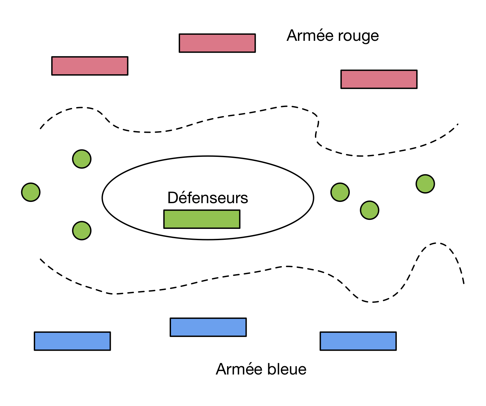
Fig. 70 Les deux armées et le défenseur¶
{kind=link}
Le problème est un classique des enseignements de systèmes distribués et vise à illustrer un cas de recherche de consensus en l’absence de communications totalement fiables. Il faut donc chercher à définir un protocole tolérant aux pannes de communication.
Quelle stratégie permet à B et R de s’assurer qu’ils sont d’accord pour attaquer au même moment? Raisonnez « par cas » en étudiant les différentes possibilités et essayez d’en trouver un dans lequel les deux généraux peuvent savoir de manière sûre qu’ils partagent la même information.
(Plus difficile) Vous devriez arriver à vous faire une idée sur l’existence ou non d’un procole: démontrez cette intuition!
Exercice Ex-rep-3: le problème des époux trompés
Encore un petit problème de calcul distribué qui montre un autre type de raisonnement à priori insoluble mais qui (cette fois) trouve sa solution. Nous sommes au royaume des Amazones, chaque amazone a un époux, et certains sont infidèles (entendons-nous bien: le problème pourrait être exposé dans beaucoup de situations équivalentes, ou en transposant les rôles). Comme de juste, quand l’époux d’une amazone est infidèle, tout le monde le sait sauf elle.
Un jour la reine prend la parole: « je sais de source sûre qu’il existe des infidélités dans mon royaume; je n’ai pas le droit de les révéler et aucune d’entre vous non plus, mais si vous êtes sûre que votre époux est infidèle, je vous ordonne de le sacrifier le soir à minuit ». Il y a 17 époux infidèles: le 17ème jour, à minuit, les 17 amazones trompées sacrifient leur époux.
Comment ont-elles fait? À vous d’exposer le protocole et de montrer qu’il est correct (ce qui est préférable). Un peu d’aide: commencer à raisonner dans le cas où il y a un seul époux infidèle dans le royaume. Il reste ensuite à construire un raisonnement incrémental.
Question subsidiaire: le discours de la reine ne semble contenir aucune information. En quoi joue-t-il le rôle déclencheur?
Exercice Ex-rep-4: une autre approche pour la cohérence forte
Supposons que l’on applique la règle du quorum au moment d’une lecture: sur les R versions que l’on récupère, on choisit celle qui apparaît en majorité.
Montrer que la règle R +W > RF ne garantit plus la cohérence. Prendre par exemple RF=5, W=R=3 et donner un contre-exemple.
Exercice Ex-rep-5: allons plus loin avec Elastic Search
Cet exercice consiste à explorer la documentation Elastic Search pour répondre à certaines questions laissées en suspens dans la section consacrée à ce système.
Commencez par étudier les différents types de nœuds: https://www.elastic.co/guide/en/elasticsearch/reference/current/modules-node.html.
Expliquez les différences entre les rôles master et data.
Expliquez en quoi consiste un nœud coordinateur
Peut-on avoir un nœud qui n’a que le rôle master? Expliquez.
Peut-on avoir un nœud qui n’a que le rôle coordinateur? Expliquez.
Regardez ensuite la section https://www.elastic.co/guide/en/elasticsearch/reference/current/modules-discovery.html.
Expliquez comment un nœud ajouté à un grappe trouve le master de la grappe
Expliquez comment Elastic Search détermine un nouveau master en cas de panne affectant un nœud. Vous pouvez citer en référence des liens vers les parties de la documentation concernées.
Exercice Ex-rep-5: parlons des transactions ACID distribuées
Les transactions considérées dans la session qui précède sont très éloignées de celles, dites ACID, en usage dans les SGBD relationnelles. Dans une transaction ACID, on ne regarde pas une opération, mais une séquence d’opérations censées s’effectuer de manière solidaire (« tout ou rien », c’est l’atomicité), marquée de manière définitive par des commit ou des rollback (c’est la durabilité), et pendant lesquelles les mises à jour effectuées par une transaction \(T\) sont invisibles des autres (c’est l’isolation).
En l’absence de propriétés ACID, il est bien difficile d’utiliser un système pour, par exemple, effectuer des virements bancaires ou réserver des billets d’avion.
Il existe un protocole pour effectuer des transactions ACID dans un système distribué: le commit à deux phases (TPC). Il arrivera (peut-être / sans doute) dans le systèmes NoSQL. En attendant il est instructif de se pencher sur son fonctionnement.
Note
Cet exercice est long et assez difficile, il s’apparente à un atelier d’approfondissement. À faire de manière optionnelle si vous avez le temps et l’appétit pour des sujets avancés en gestion de données.
- Commencer par étudier le fonctionnement de l’algorithme, par exemple depuis les sources suivantes
- Répondez aux questions suivantes
Quelles sont les hypothèses requises sur le fonctionnement du système pour que le TPC fonctionne?
Expliquer pourquoi le coordinateur ne peut pas envoyer directement un ordre commit (ou rollback) à chaque participant (« One phase commit »).
En fonction de ce que nous a apris l’exemple des deux armées, dressez la liste des problèmes qui peuvent se poser et empêcher la finalisation d’une transaction TPC.
À l’issue de la première phase, quels engagements a pris chaque participant?
Qu’est-ce qui garantit qu’une transaction distribuée va finir par s’exécuter?
Quel est le plus grand inconvénient du TPC?

Ce cours de Philippe Rigaux est mis à disposition selon les termes de la licence Creative Commons Attribution - Pas d’Utilisation Commerciale - Partage dans les Mêmes Conditions 4.0 International.
Table Of Contents
- Introduction
- Préliminaires: Docker
- Modélisation de bases NoSQL
- Interrogation de bases NoSQL
- MapReduce, premiers pas
- Cassandra - Travaux Pratiques
- MongoDB - Travaux Pratiques
- Introduction à la recherche d’information
- Recherche d’information : l’indexation
- Recherche avec classement
- Recherche d’information - TP ElasticSearch
- Recherche d’information - TP ElasticSearch : pertinence
- Le cloud, une nouvelle machine de calcul
- Systèmes NoSQL: la réplication
- Systèmes NoSQL: le partitionnement
- Calcul distribué: Hadoop et MapReduce
- Traitement de données massives avec Apache Spark
- Traitement de flux massifs avec Apache Flink
- Pig : Travaux pratiques
- Projets NFE204
- Annales des examens
Recherche
Saisissez un ou plusieurs mots-clés.
Exercice Ex-rep-1: comment fonctionne un site de commerce électronique?
Prenons un site de commerce électronique à grande échelle, type Amazon. En interne, ce système s’appuie sur un système NoSQL avec cohérence à terme.